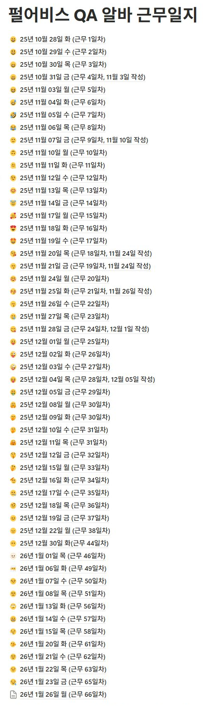

펄어비스 · 붉은사막 QA
펄어비스 · 붉은사막 QA
QA 근무일지
–
노션 근무일지
날짜별 기록 53편
스크롤해서 전체 목록 보기원본 크기로 보기 ↗
일지로 보는 업무의 변화
캐릭터가 펀치 한 번을 날리는 데 필요한 일
챕터를 플레이하고 녹화하던 날, 캐릭터가 주먹을 뻗는 동작 하나를 예로 들어 설명을 들었습니다. 모션 캡처와 물리 처리부터 맞는 순간의 효과음, 상대의 피격 동작과 흙먼지까지 한 장면 안에서 맞아야 한다는 걸 배웠습니다.
오늘 보이지 않은 오류도 다시 확인하기
이미 보고된 오류가 제 플레이에서는 나타나지 않았습니다. 간헐적으로 발생하는 문제일 수 있다는 설명을 듣고, 다음 검수 때 다시 확인할 항목으로 적어 뒀습니다.
- –
퀘스트 이슈를 직접 등록하고 재현 절차 줄이기
Jira 작성법을 배운 뒤 캠프 퀘스트 이슈 등록을 맡았습니다. 다음 날에는 화면에서 아이콘이 사라지지 않는 현상을 여러 번 재현했습니다. 담당자와 함께 불필요한 조작을 걷어 내고, 같은 현상이 나타나는 짧은 절차로 다시 확인해 Jira에 올렸습니다.
낚시 버그를 재현하고 게임 데이터 살펴보기
낚시 중 발생한 버그를 다시 재현하고 Jira에 보고할 내용을 정리했습니다. 이날은 Perforce와 XML을 이용해 게임에서 제외된 콘텐츠의 데이터를 확인하는 방법도 배웠습니다.
- ·
아이템 점검과 시퀀스 더빙 검수
1월 8일에는 별도로 요청받은 아이템 점검을 시작했습니다. 15일에는 시퀀스의 더빙을 확인할 수 있도록 해당 장면을 녹화했습니다. 초반에 익힌 챕터 녹화를 개별 콘텐츠와 음성 검수에도 활용했습니다.

수기 근무일지
게임을 만드는 현장에서 하나라도 더 배우고 싶어 펄어비스 웰컴 키트로 받은 노트를 근무일지로 썼습니다. 버그가 나기 직전에 했던 조작과 다음 검수 때 다시 확인할 조건을 적었습니다. LOD처럼 낯선 용어는 나중에 다시 읽어도 이해할 수 있게 제 말로 풀어 썼습니다.
노트 속 기록 일부 보기
- 업무 준비와 진행 오류
- 퀘스트 재현과 재검증
- LOD와 인게임 표시 점검
- Jira 이슈 등록과 확인
- Perforce와 퀘스트 점검
- 챕터 검수와 녹화 기록